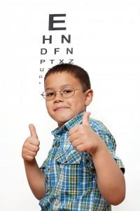

<?xml version="1.0" encoding="UTF-8"?><rss version="2.0"
	xmlns:content="http://purl.org/rss/1.0/modules/content/"
	xmlns:wfw="http://wellformedweb.org/CommentAPI/"
	xmlns:dc="http://purl.org/dc/elements/1.1/"
	xmlns:atom="http://www.w3.org/2005/Atom"
	xmlns:sy="http://purl.org/rss/1.0/modules/syndication/"
	xmlns:slash="http://purl.org/rss/1.0/modules/slash/"
	>

<channel>
	<title>kids eyeglasses &#8211; Optometrist in Annapolis</title>
	<atom:link href="http://annapolis.eyefitvisioncenters.com/eyeglasses/Maryland/kids-eyeglasses/feed/" rel="self" type="application/rss+xml" />
	<link>http://annapolis.eyefitvisioncenters.com/eyeglasses</link>
	<description>eye doctor &#124; eye exam &#124; eyeglasses frames</description>
	<lastBuildDate>Fri, 25 Mar 2016 18:25:12 +0000</lastBuildDate>
	<language>en-US</language>
	<sy:updatePeriod>hourly</sy:updatePeriod>
	<sy:updateFrequency>1</sy:updateFrequency>
	
	<item>
		<title>Annapolis Kids Eyeglasses</title>
		<link>http://annapolis.eyefitvisioncenters.com/eyeglasses/annapolis-kids-eyeglasses/</link>
		<pubDate>Fri, 09 Oct 2015 09:01:06 +0000</pubDate>
		<dc:creator><![CDATA[pjdhanoa]]></dc:creator>
				<category><![CDATA[Annapolis]]></category>
		<category><![CDATA[Optometrist]]></category>
		<category><![CDATA[21401]]></category>
		<category><![CDATA[annapolis]]></category>
		<category><![CDATA[eyeglasses]]></category>
		<category><![CDATA[kids eyeglasses]]></category>

		<guid isPermaLink="false">http://annapolis.eyefitvisioncenters.com/eyeglasses/?p=44</guid>
		<description><![CDATA[21401 Eyeglasses All different kinds of people need to use vision correction in order to see clearly on a regular basis. Many kids end up developing some kind of vision impairment and it is important to make sure that your child has the proper eyewear especially before they go to school. Here at EyeFit Vision Centers, [&#8230;]]]></description>
				<content:encoded><![CDATA[<h1><a href="../../../../index.html">21401 Eyeglasses</a></h1>
<p>All different kinds of people need to use vision correction in order to see clearly on a regular basis. Many kids end up developing some kind of vision impairment and it is important to make sure that your child has the proper eyewear especially before they go to school. Here at EyeFit Vision Centers, we can help you find the children’s eyeglasses that you are looking for. With <a href="../../../../index.html">Annapolis kid’s eyeglasses</a>, your children will be able to see comfortably and clearly no matter what.</p>
<div id="attachment_45" style="width: 210px" class="wp-caption alignleft"><a href="../../../wp-content/uploads/2015/10/9509022_xl.jpg"></a><p class="wp-caption-text">Annapolis Kids Eyeglasses</p></div>
<p>It is generally recommended that children begin seeing an eye doctor about once a year from the time that they are about six months old. Children’s eye exams are recommended for several reasons. For the most part, children are still growing and developing. An eye exam can help make sure that their eyes and their vision are developing normally as well, and if any issues are spotted they can be treated promptly. Early changes can be treated to help prevent lifelong vision impairments, but there are some eyesight issues that cannot be reversed or treated permanently. It is common for children to develop vision problems like nearsightedness, farsightedness or astigmatism, and if these issues develop then your child will need to wear the proper eyewear in order to see clearly. Here at EyeFit Vision Centers, we can provide your kids with vision screenings that will test the quality of their vision and determine what their prescription needs are. From there, we can show you our selection of <a href="../../../../index.html">Annapolis kids eyeglasses</a>. We have a wide range of styles for your kids to choose from and we also have several options regarding the type of lenses that you can have installed in the frames you choose. It’s important that children’s eyeglasses fit properly, and our team of opticians will help you choose a pair of frames, select your styles and features, and make sure that they fit your child’s face comfortably.</p>
<p>It is incredibly important that kids be able to see clearly. Kids are visual learners so prescribing the proper lenses when they need them can help immensely, no matter how strong of a prescription they may need. If you are looking for a place to test your child’s vision needs and get children’s eyeglasses, call us here at EyeFit Vision Centers and see our selection of <a href="../../../../index.html">Annapolis kid’s eyeglasses</a>.</p>
<h3>EyeFit Vision Centers<br />
2321 Forest Drive<br />
Annapolis, MD 21401<br />
(410) 266-3369</h3>
]]></content:encoded>
			</item>
	</channel>
</rss>

<!-- Dynamic page generated in 0.193 seconds. -->
<!-- Cached page generated by WP-Super-Cache on 2016-04-09 16:35:59 -->

<!-- Localized -->